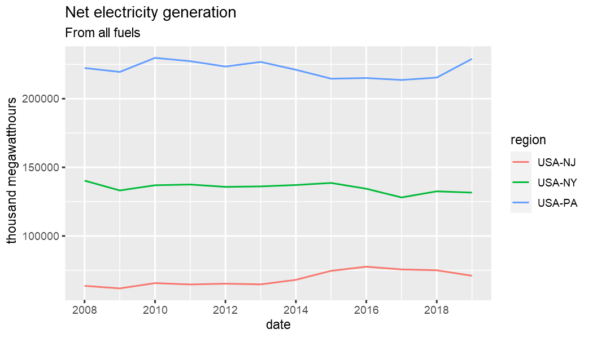

Time series by region
Geosets are metadata structures relating series together. Requesting series using the geoset API endpoint is much the same as requesting series data using the series endpoint. Instead of eia_series, use eia_geoset.
The main difference is that you must provide a geoset ID to id and a region argument. Both may be vectors of multiple series and regions. The function returns the combination of time series datasets and regions that exist. The API will not return all geographic entities associated with a geoset. You are required to specify which region(s) you want and they must be associated with the given geoset ID.
library(eia)
library(dplyr)
library(tidyr)
library(ggplot2)
# eia_set_key("yourkey") # set API key if not already set globally
id <- "ELEC.GEN.ALL-99.A"
region <- c("USA-CA", "USA-NY")
(x <- eia_geoset(id, region[1], n = 3))
#> # A tibble: 1 x 11
#> geoset_id setname f units series_id name region latlon start end data
#> <chr> <chr> <chr> <chr> <chr> <chr> <chr> <chr> <chr> <chr> <list>
#> 1 ELEC.GEN.ALL-9~ Net generation : all fuels : all s~ A thousand megawa~ ELEC.GEN.ALL-CA~ Net generation : all fuels : California :~ USA-CA <NA> 2001 2019 <tibble [3 ~Groups of regions
If you want data for all fifty states for example, you can set region = "USA"; you do not need to make a vector of all fifty state IDs. However, if you want certain region subsets, there are other options besides making a vector of these values. For example, the eia_geoset accepts shorthand descriptions of specific, popular subsets of states; so popular in fact that their labels ship with R itself in the datasts package.
You can provide simple state abbreviations (without the USA- prefix), state names, and more to the point, US Census regions and divisions. These are two hierarchical sets of US states.
tibble(state.abb, state.name, state.region, state.division)
#> # A tibble: 50 x 4
#> state.abb state.name state.region state.division
#> <chr> <chr> <fct> <fct>
#> 1 AL Alabama South East South Central
#> 2 AK Alaska West Pacific
#> 3 AZ Arizona West Mountain
#> 4 AR Arkansas South West South Central
#> 5 CA California West Pacific
#> 6 CO Colorado West Mountain
#> 7 CT Connecticut Northeast New England
#> 8 DE Delaware South South Atlantic
#> 9 FL Florida South South Atlantic
#> 10 GA Georgia South South Atlantic
#> # ... with 40 more rowsProvide the associated label and eia_geoset recognizes subsets of US states. Even this can be a vector. In the example below, region consists of Alaska plus the states belonging to the New England census division.
(x <- eia_geoset(id, c("AK", "New England"), n = 1))
#> # A tibble: 7 x 11
#> geoset_id setname f units series_id name region latlon start end data
#> <chr> <chr> <chr> <chr> <chr> <chr> <chr> <chr> <chr> <chr> <list>
#> 1 ELEC.GEN.ALL-9~ Net generation : all fuels : all s~ A thousand megaw~ ELEC.GEN.ALL-AK~ Net generation : all fuels : Alaska : all ~ USA-AK <NA> 2001 2019 <tibble [1 ~
#> 2 ELEC.GEN.ALL-9~ Net generation : all fuels : all s~ A thousand megaw~ ELEC.GEN.ALL-CT~ Net generation : all fuels : Connecticut :~ USA-CT <NA> 2001 2019 <tibble [1 ~
#> 3 ELEC.GEN.ALL-9~ Net generation : all fuels : all s~ A thousand megaw~ ELEC.GEN.ALL-MA~ Net generation : all fuels : Massachusetts~ USA-MA <NA> 2001 2019 <tibble [1 ~
#> 4 ELEC.GEN.ALL-9~ Net generation : all fuels : all s~ A thousand megaw~ ELEC.GEN.ALL-ME~ Net generation : all fuels : Maine : all s~ USA-ME <NA> 2001 2019 <tibble [1 ~
#> 5 ELEC.GEN.ALL-9~ Net generation : all fuels : all s~ A thousand megaw~ ELEC.GEN.ALL-NH~ Net generation : all fuels : New Hampshire~ USA-NH <NA> 2001 2019 <tibble [1 ~
#> 6 ELEC.GEN.ALL-9~ Net generation : all fuels : all s~ A thousand megaw~ ELEC.GEN.ALL-RI~ Net generation : all fuels : Rhode Island ~ USA-RI <NA> 2001 2019 <tibble [1 ~
#> 7 ELEC.GEN.ALL-9~ Net generation : all fuels : all s~ A thousand megaw~ ELEC.GEN.ALL-VT~ Net generation : all fuels : Vermont : all~ USA-VT <NA> 2001 2019 <tibble [1 ~
x$data[[1]]
#> # A tibble: 1 x 3
#> value date year
#> <dbl> <date> <int>
#> 1 6071. 2019-01-01 2019
region <- "Middle Atlantic"
x <- eia_geoset(id, region, n = 12)
select(x, region, data) %>% unnest(cols = data)
#> # A tibble: 36 x 4
#> region value date year
#> <chr> <dbl> <date> <int>
#> 1 USA-NJ 71019. 2019-01-01 2019
#> 2 USA-NJ 75034. 2018-01-01 2018
#> 3 USA-NJ 75645. 2017-01-01 2017
#> 4 USA-NJ 77611. 2016-01-01 2016
#> 5 USA-NJ 74609. 2015-01-01 2015
#> 6 USA-NJ 68051. 2014-01-01 2014
#> 7 USA-NJ 64751. 2013-01-01 2013
#> 8 USA-NJ 65263. 2012-01-01 2012
#> 9 USA-NJ 64694. 2011-01-01 2011
#> 10 USA-NJ 65682. 2010-01-01 2010
#> # ... with 26 more rows
unnest(x, cols = data) %>%
ggplot(aes(date, value, color = region)) + geom_line() +
labs(y = x$units[1], title = "Net electricity generation", subtitle = "From all fuels")
Relations
There is also a relation argument that accepts an optional relation ID. If one is provided, eia_geoset will switch to the API relation endpoint. A relation is another metadata structure that applies to geosets and relates summary statistics associated with geoset IDs to their composite statistics. This makes it easier to obtain variables that facet the data, e.g., by sector or fuel type.
The EIA relation API endpoint is officially supported according to the online EIA API documentation, but unfortunately that endpoint does not appear to function at the time of current package release.